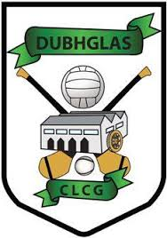
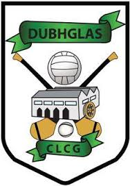

Sports
My favourite sport is GAA,I played camogie for four years with Douglas GAA. I enjoy going to hurling and football matches,especially Cork GAA. I have been to many hurling finals in Croke Park to watch Cork play however, I am yet to witness Cork win a All Ireland Final in Croke Park.
 
